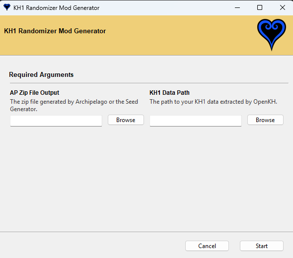
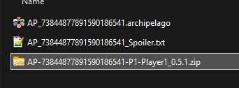
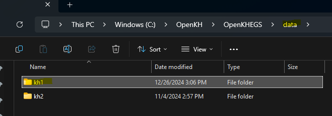

In your KHFM Randomizer Software folder, find "mod_generator.exe" and open it.
Once open, you'll be greeted with the following screen prompting you to point out the seed zip your OpenKH KH1 extracted data path.

Point our your seed zip for your slot. Importantly, this is the inner zip file inside the generated zip in "Generating a Seed" and should contain your player/slot name in the filename.

Point out your KH1 extracted data path. Usually this is a folder named "kh1" in your OpenKH path inside the "data" folder:

When both steps above are complete, you should see the following window, as well as some text output that should describe the mod creation process.

Once complete, find your new mod zip in your KHFM Randomizer Software folder under "/Output/".

Installing the Generated Mod